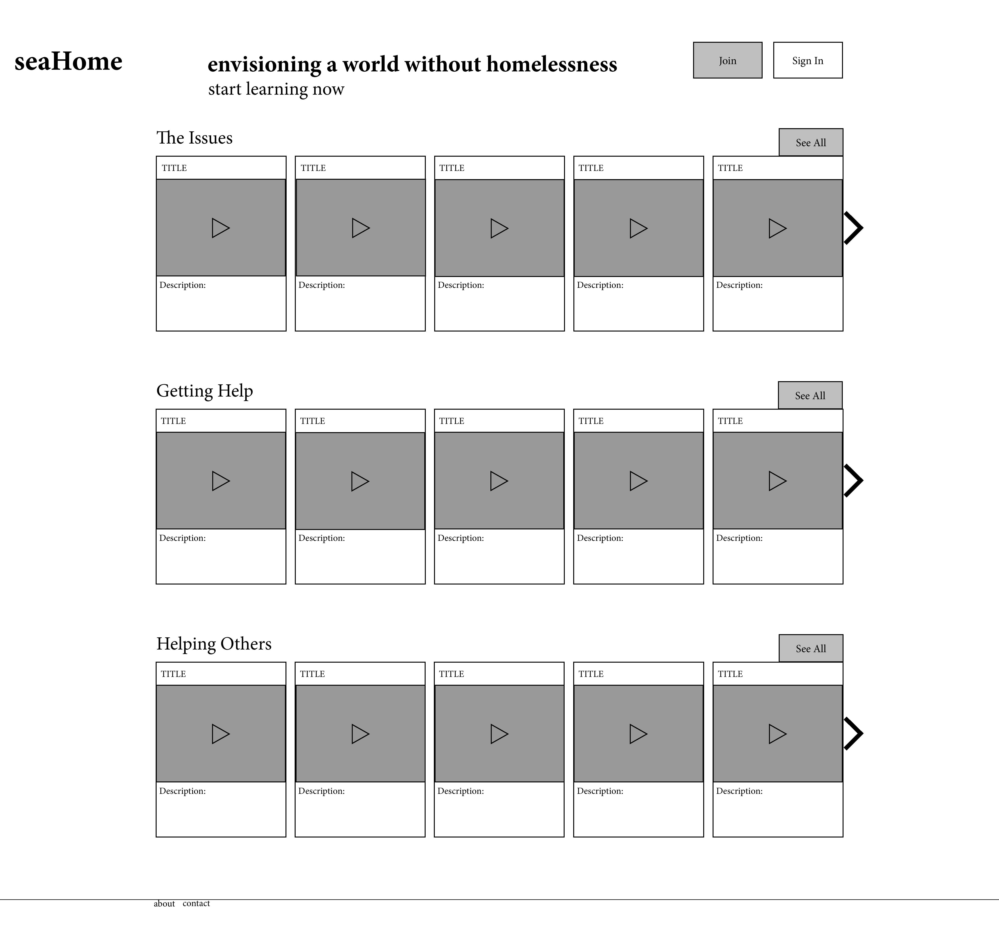

This was an end of course project that I worked on with three others for an Informatics class at UW. The goal for this project was to create an online educational platform primarily geared toward those affected by homelessness. The platform was intended to help both those affected by homelessness and those who are not. We wanted to connect those who are affected to resources that could help them navigate the system. We also focused on correcting some the misinformation that is currently perpetuated about the systemic problem of homelessness.
Identifying the problem
In our research we reached out to a few experts on homelessness in Seattle. Dr. Hendry: a professor in the iSchool and who had worked in studying how youth affected by homelessness use technology, Mary Steele: the director at a youth shelter in Belltown, and Graham Pruss: a doctoral student and the director of WeCount. These meetings were invaluable in attaining a better understanding of the problems facing those affected by homelessness. Based on their input we knew that we needed a platform that could be easily accessed, provide information on how to best use the public services offered, and educate those not affected.
Design
Before we arrived at the final design and functionality of the site, we threw around a couple of designs that fulfilled different aspects of what we wanted to accomplish with the platform. Ultimately we wanted an easy to use interface that made accessing the content and information as easy as possible.
Finished Product
The finished product provides video content and articles on a broad range of relevant topics. The platform combines online learning through the website with outreach seminars hosted at public libraries to help those affected by homelessness. Check out the site here and the source code here.